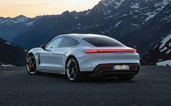
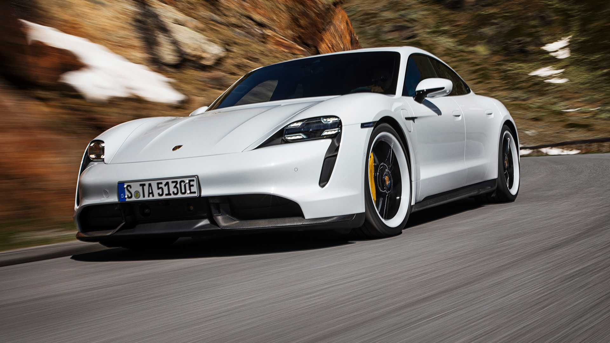
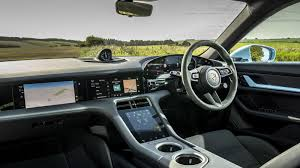

Demonstrating the Box Model
Box Model: The CSS box model is a box that wraps around every HTML element. It consists of: borders, padding, margins, and the actual content.
Explanation of the different parts:
- Content - The content of the box, where text and images appear
- Padding - Clears an area around the content. The padding is transparent
- Border - A border that goes around the padding and content
- Margin - Clears an area outside the border. The margin is transparent
here we can see this as an example that this text is the content of the box.
About Porcshe Taycan Turbo S
The Porsche Taycan is an all-electric car made by German automobile manufacturer Porsche. The concept version of the Taycan, named the Porsche Mission E, debuted at the 2015 Frankfurt Motor Show.[4] The Taycan was revealed fully production-ready at the 2019 Frankfurt Motor Show.[3] As Porsche's first series production electric car,[4] it is sold in several variants at different performance levels, and may spawn further derivatives in future models.[5] More than 20,000 Taycans were delivered in 2020, its debut sale year, representing 7.4% of the total Porsche volume.[6]
"TOP SPEED 203m/H
MAX RANGE 400 MILES
PRICE 2.5cr INR "


